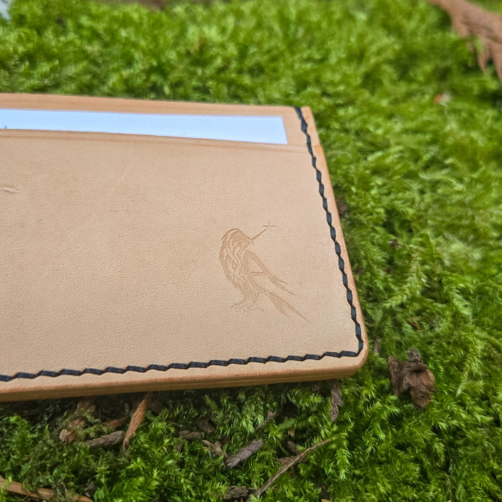

Bifold · Six pockets
The Warden
A six-pocket bifold with one cash flap. The Warden is presented here as a finished Rogue Artisan design; ask about leather, colour, and build options for a commission.

The Warden — photo gallery
More views of this six-pocket leather bifold wallet, including leather grain, stitching, interior layout, and finished details.
Add detail photo 1
Add detail photo 2
Add detail photo 3
The details
Made with purpose.
The supplied gallery identifies the Warden as a six-pocket bifold with one cash flap.
Every commission begins with a conversation about use, materials, colour, and the small details that make a piece yours. Availability and final specifications are confirmed before a build is accepted.
Interested in The Warden? Send an inquiry and mention this design. Submitting an inquiry is not a purchase or a guarantee of acceptance.